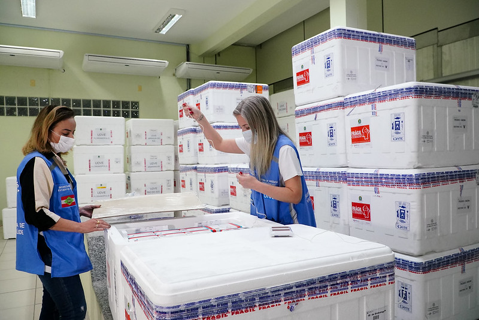

Trabalho e logística eficiente levam
esperança a milhões de catarinenses
Trabalho e logística eficiente levam esperança a milhões de catarinenses
De 2020 pra cá, entre tantas mudanças de hábitos, os catarinenses tiveram que aprender a conviver com os números de um jeito diferente. Desde a chegada da Covid-19, são um ano e seis meses contando números: de casos ativos, de doentes, de mortes e de leitos de hospital disponíveis. Até quando? Contamos os dias para a descoberta da vacina, até que o tempo da esperança chegou. E se, ao invés de contarmos quantas doses aplicadas, contássemos quantos braços vacinados? Afinal, durante todo esse período, o braço do catarinense e os muitos braços do Estado estão ajudando a suportar o peso da pandemia e trabalhando firmes para vencê-la o mais rápido possível. Em Santa Catarina, já são mais de 8 milhões de vacinados, número que resulta de trabalho em múltiplas frentes e logística eficiente na distribuição de vacinas para todos os municípios do estado.
Até que as primeiras doses de vacina contra a Covid-19 chegassem a Santa Catarina, o Governo do Estado priorizou medidas sanitárias com foco na preservação da vida, com respaldo da ciência para a tomada de decisões. Com a destinação de mais de R$ 1 bilhão em recursos foi possível estruturar a rede pública de saúde, do reforço do quadro de profissionais a praticamente triplicar o número de leitos de UTI para atender os casos graves da doença. Além disso, o Estado aumentou os repasses da Política Hospitalar Catarinense, elevando os pagamentos para o teto máximo.
Quase que simultaneamente, o Governo do Estado desenvolveu um plano de ação para a manutenção das principais atividades econômicas. Com diálogo aberto junto ao setor produtivo e o regramento responsável, por meio de portarias sanitárias, foi possível minimizar os impactos da pandemia nos mais diversos setores. A economia continuou girando e, mais que isso, com números positivos, principalmente com relação à manutenção do emprego, à abertura de novas empresas, às exportações do agronegócio, entre outros indicadores de crescimento econômico.
"Santa Catarina é reconhecidamente - conforme apontam organismos independentes de monitoramento - o estado com um dos melhores enfrentamentos à pandemia, da mesma forma, com uma das gestões públicas mais eficientes. Essa combinação foi um diferencial importante porque garantiu o trabalho do Governo em múltiplas frentes e continua essencial para sairmos mais rápido desta grave crise sanitária. O mais importante sempre será a vida, sem ela não há volta à normalidade, seguimos trabalhando com esse compromisso, mas, também é nosso papel gerar esperança por meio de obras e ações que serão ainda mais presentes com o avanço da vacinação", afirma o governador Carlos Moisés.
O estado tem hoje mais de oito milhões de braços vacinados com ao menos a primeira dose, mas, para chegar a cada catarinense apto a receber a vacina contra a Covid-19, há um caminho a ser percorrido com a participação de centenas de profissionais, de transportadores, motoristas a profissionais da segurança pública e, claro, da saúde. Cada um é parte fundamental de uma logística eficiente para fazer a vacinação avançar. Uma das metas estabelecidas pelas autoridades da saúde está sendo cumprida desde o início da vacinação em Santa Catarina. Da chegada a Florianópolis, são apenas 24 horas para as vacinas estarem nas 17 regionais descentralizadas da Vigilância Epidemiológica estadual e dali, também no menor espaço de tempo, são enviadas aos municípios.
Para o superintendente da Vigilância em Saúde do Estado, Eduardo Macário, mesmo cansadas, as equipes estão empenhadas e conduzindo o trabalho com a maior eficiência. “A partir do momento que recebemos a informação do Ministério da Saúde, faça chuva ou faça frio, as equipes estão prontas para receber e garantir a agilidade necessária em toda a cadeia envolvendo a distribuição das vacinas. Todo esse esforço vale à pena, até agora as operações ocorreram sem intercorrências ou perdas relacionadas à logística”, avalia Macário.
De todas as etapas do enfrentamento à pandemia, Eduardo Macário diz que a campanha de vacinação é um dos momentos mais especiais. “É a esperança de que estamos dando os primeiros passos em direção à vitória dessa doença. O sentimento de gratidão supera o cansaço e reforça o nosso compromisso em oferecer saúde neste momento em que a população continua afligida pela pandemia”, afirma.
Trabalho e emoção no caminho
da vacina em Santa Catarina
É o Ministério da Saúde que comunica a chegada de vacinas ao estado. Esta informação chega, normalmente com poucos dias de antecedência, por meio de um documento que é chamado de pauta. Com o aviso de novas remessas à caminho de Santa Catarina, a pauta é compartilhada com diversas equipes dando início a uma operação que tem como meta distribuir vacinas contra a Covid-19 o mais rápido possível, sem perda de tempo e de doses. Em todas as etapas de distribuição das vacinas, os profissionais envolvidos não escondem a emoção de trabalhar para entregar doses de esperança à população catarinense.
O diretor de Vigilância Epidemiológica, João Augusto Brancher Fuck, ressalta que muito antes da chegada das vacinas, toda a estrutura estava preparada para garantir uma logística operacional que funcionasse bem. “É uma campanha diferente de todas, com produtos diferentes, com públicos separados por faixa etária, isso exige trabalho e atenção ainda maiores. Nós temos conseguido êxito nessa operação, fazendo com que a vacinação avance por todo o estado. É o momento de agradecer e reconhecer cada profissional até a ponta, nos municípios, onde a vacina encontra o braço do catarinense”, enaltece.
Por conta de todas estas especificações, a gerente de imunização da DIVE-SC, Arieli Schiessl Fialho, também destaca que a pandemia trouxe desafios profissionais e pessoais nunca antes vivenciados por ela. "O que nos motiva e não nos deixa desistir, é um bem muito maior. De todos os sentimentos, o de gratidão é o que prevalece, por saber que há uma equipe trabalhando e se dedicando ao próximo e que esse trabalho pode mudar a vida de muitas pessoas”, revela. Entre outras funções, Arieli é responsável pelas notas técnicas, um documento que orienta todos os passos para a administração das vacinas de forma correta, bem como o acompanhamento de possíveis intercorrências da vacinação relatadas à DIVE.
-
Início da operação
Na chegada das remessas no aeroporto de Florianópolis, é Décio Guarnieri Júnior que faz a descarga das caixas, confere as informações sobre quantidade e condições de armazenamento. Ele nunca imaginou desempenhar uma função como essa num período de pandemia. "Sou um privilegiado por fazer parte desse processo. Cada remessa que chega, aumenta a minha esperança de que mais catarinenses poderão estar protegidos dessa doença", conta Décio.
-

Transporte até a Central de Frio
Do lado de fora do pátio, um caminhão com câmera fria está preparado para que as vacinas sejam transportadas atendendo ao padrão de conservação recomendado pelos fabricantes. Do aeroporto, as vacinas são levadas para a Central Estadual de Rede de Frio da DIVE que fica no município vizinho, São José. A carga segue escoltada por efetivos da Segurança Pública, envolvendo especialmente a Polícia Militar.
-
Identificação das caixas
Quando as vacinas chegam à Central estadual de Frios entra em ação a equipe da Josiane da Costa Vieira – enfermeira com anos de atuação voltada às campanhas de imunização. Ao apontar para pilhas de caixas identificadas pelos nomes dos municípios-sede das unidades descentralizadas da Dive, ela explica que nesta etapa, todas as doses precisam ser conferidas, contabilizadas e divididas de acordo com a quantidade definida para cada gerência de saúde em diferentes regiões do estado.
Depois de oito meses de campanha de vacinação contra a Covid-19, Josiane revela que os sentimentos de cansaço, emoção e gratidão se misturam, mas, não há espaço para o desânimo. “Eu não vivi nada igual em todos os sentidos, mas não sai da minha cabeça a imagem do primeiro caminhão que chegou aqui trazendo doses de esperança, a partir daquele momento eu decidi não parar porque muitas pessoas dependeriam do meu trabalho e da minha equipe para receber a sua dose. A vacina aponta para um caminho melhor e a gente não pode desanimar em trilhar por este caminho”, frisa a enfermeira responsável pela Central Estadual de Frios.
-
A caminho das regiões
O trabalho na Central é imediatamente à chegada das doses, quando não no mesmo dia, na manhã do dia seguinte, as vacinas já podem ser despachadas para as regionais. Muitas vezes, a tarefa tem avançado à madrugada. Para as regiões mais próximas, as doses vão por via terrestre, já para as regiões mais distantes ou em casos de maior necessidade de agilidade no recebimento, as vacinas são transportadas nas aeronaves do Batalhão de Operações Aéreas (BOA), responsável pelos serviços aéreos de emergências em Saúde no estado.